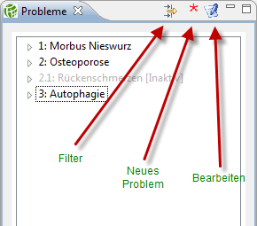
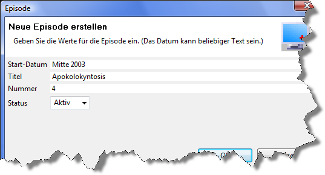

Ch.elexis.icpc.feature.feature.group
| Version: | 3.0.0.a20140408-1247 |
| Kategorie: | Laboranbindung |
| Beschreibung: | KG-Führung |
| Author: | |
| Letzte Bearbeitung: | 23. Juni 2014 |
| Voraussetzungen: | Elexis 3.0 |
| Betriebssystem: | Windows, Mac, Linux |
| Lizenz: | Eclipse Public License (EPL) |
ICPC-2, die *I*nternational *C*lassification of *P*rimary *C*are ist ein Codierungswerkzeug für die Bedürfnise der Grundversorger und versucht deren Tätigkeit besser abzubilden, als dies mit Codierungssystemen wie ICD-10 möglich ist. Der Ansatz des Hausarztes ist meist ‘Grundzentriert’ und nicht ‘Diagnosezentriert’: Die erste Frage ist ‘Warum kommt der Patient?’ Dementsprechend kommen hier oft Bezeichnungen zur Anwendung, die in bekannten Codesystemen wie ICD-10 oder CHOP nicht gut codiert werden können (‘Unwohlsein’, oder ‘Angst vor Krebs’ etc.). ICPC erlaubt also die Abbildung der Tätigkeit des Hausarztes und ist darum ein geeignetes Werkzeug, um sowohl abrechnungsstatistische als auch wissenschaftliche Daten dieser Tätigkeit zu erheben. Gleichzeitig ist ICPC nach einer gewissen Eingewöhnungszeit auch sehr einfach in der Anwendung – Die Codierung ist viel weniger zeitraubend, als mit ICD-10, da der Code weniger umfangreich und stärker ‘Grundzentriert’ ist, wie wir unten weiter ausführen werden. ICPC ist lizenzpflichtig. Inhaber der Lizenz für die Schweiz ist die Schweizerische Gesellschaft für Allgemeinmedizin (SGAM). Man kann sich dort gegen eine Gebühr registrieren lassen und erhält dann eine Datenbank mit der aktuellen Codeversion. Näheres s. http://www.icpc.ch. In Elexis ist nur die Infrastruktur vorhanden, um diese Datenbank einzulesen. Die Daten selbst muss der interessierte Anwender selbst besorgen. Das Vorgehen dazu wird im Anhang dieses Dokuments erläutert.
Contents
- 1 Codierungsprinzipien
- 2 Anwendung in Elexis
- 3 Ein Problem erstellen und bearbeiten
- 4 Ein Problem in einer Konsultation behandeln
- 5 Ein Encounter codieren
- 6 Einem Problem eine Krankenkassendiagnose zuordnen
- 7 Ein Problem durch die Zeit verfolgen
- 8 Die Entwicklung eines Problems chronologisch aufzeigen
- 9 Import des Codes
Codierungsprinzipien
Ausgangspunkt der ICPC-Codierung ist eine ‘Episode’. Diese ist eine alte Bekannte, auch wenn Sie sie bisher vielleicht eher als ‘Problem’ in einer Problemliste aufgeführt haben. Die Elexis-Implementation von ICPC verwendet deshalb auch gleich den vertrauten Begriff ‘Problemliste’ anstatt einer ‘Episodenliste’, beides ist aber – bis auf die Bezeichnung – dasselbe. Ein Problem hat immer einen Anfang, manchml auch ein Ende, es kann aktiv oder passiv sein und es kann im Lauf der Zeit mit unterschiedlichen Diagnosen und Behandlungsplänen ‘hinterlegt’ sein. Wenn ein Patient wegen eines Problems behandelt wird, dann ist dies ein ‘Encounter’. Mangels eines besseren deutschen Worts bezeichnen wir dies hier weiterhin als Encounter. Ein Encounter ist nicht dasselbe wie eine Konsultation: Während einer Konsultation können mehrere Probleme behandelt werden, was mehreren Encounters entspricht. Ein Problem dauert also eine bestimmte Zeit im Leben eines Menschen, und ein Encounter ist jeder Punkt innerhalb dieses Zeitraums, an dem er den Arzt wegen dieses Problems aufsucht. Für jeden Encounter innerhalb einer Konsultation werden nun nach ICPC drei Elemente codiert:
- RFE: Reason for encounter. Warum ist der Patient gekommen? Hier geht es also nicht darum, eine medizinische Diagnose anzugeben, sondern vielmehr einen ICPC2-Code, der möglichst genau das abbildet, was uns der Patient als Konsultationsgrund genannt hat.
- Diagnose: Dies enthält nun die Interpretation des Arztes in dessen Denkschema: Was denkt der Arzt, was hinter den Beschwerden des Patienten steckt.
- Procedere: Dies ist der vorläufige Behandlungsplan: Was wurde getan oder geplant?
Alle drei Elemente können für ein- und dasselbe Problem bei jedem Encounter wieder anders sein. auf http://www.icpc.ch/index.php?id=20 finden Sie eine Grafik, die diese Zusammenhänge sehr schön zeigt.
Anwendung in Elexis
Nach Installation des Plugins finden Sie eine ICPC-Perspektive vor. Diese ist nur als Beispiel zu verstehen, und kann wie in Elexis üblich, beliebig an Ihre Vorlieben und Ihren Bildschirm angepasst werden. Sie können Views entfernen oder zufügen, oder Views anders anordnen. Zur Anwendung von ICPC-2 benötigen Sie aber mindestens die Views ‘Konsultation’, ‘Probleme’, ‘Encounters’ und ‘ICPC2-Codes’.
Ein Problem erstellen und bearbeiten
[htbp] 0.4  [fig:icpc0] 0.6  [fig:icpc2] Klicken Sie in der Probleme-View (Vgl. Abb. [fig:icpc0]) auf den roten Stern. Sie können dann ein neues Problem erfassen. (Vgl. Abb. [fig:icpc2]). Für jedes Problem kann ein Name, ein Beginn-Datum und eine Nummer angegeben werden. Probleme werden in der Probleme-View immer anhand der Nummer sortiert. Es sind auch hierarchische Nummern (1.1.2 oder so) möglich. Das Beginn-Datum kann als genaues Datum oder auch nur als Jahr angegeben werden. Standardmässig wird das aktuelle Datum genommen. Wenn Sie mit der rechten Maustaste auf ein Problem klicken, können Sie das Problem für aktiv oder passiv erklären (Ein passives Problem erscheint ausgegraut), Sie können es umbenennen oder durch Vergabe einer anderen Nummer irgendwo anders einsortieren. Sie können es auch löschen. Im Allgemein ist es aber emfehlenswert, es nur inaktiv zu schalten.
Ein Problem in einer Konsultation behandeln
[fig:icpc3]
Ziehen Sie ein Problem aus der Problemliste mit der Maus ins Konsultationsfenster der aktuellen Konsultation. Es erscheint der Text Problem: gefolgt vom grün unterlegten Namen des Problems. (Vgl. Abb. [fig:icpc3]).
Ein Encounter codieren
[fig:icpc4]
[fig:icpc5]
Ein Ecounter ist wie gesagt der Schnittpunkt eines Problems mit einer Konsulation. Soald Sie ein Problem wie oben beschrieben in ein Konsultationsfenster gezogen haben, haben Sie ein Encounter erstellt. Das Encounter hat ‘automatisch’ ein zugeordnetes Problem, ein Datum und einen Namen, was noch fehlt, sind RFE, Diagnose und Procedere. Machen Sie dazu einen Doppelcklick auf den Titel des Problems in der Konsultation. Im Fenter ‘Encounter’ erscheint nun diese Encounter ausgewählt. Wenn Sie auf eines der Felder ‘RFE’, ‘Diagnose’ oder ‘Procedere’ klicken, erscheint die ICPCCodes-View (Abb. [fig:icpc4] und [fig:icpc5]), die wir im Folgenden etwas genauer anschauen wollen: Wie Sie sehen, wird das Fenster ICPC-Codes geöffnet (oder in den Vordergrund gebracht), sobald Sie auf eine der Zeilen ‘RFC’, ‘Diagnose’ oder ‘Procedere’ in der Encounter-View klicken. Das entsprechende Feld wird dann rot umrandet als Zeichen, dass ein Doppelklick im Codefenster den Code in den rot umrandeten Bereich ‘befördern’ wird. Im oberen Bereich der View sehen Sie die ICPC2-Kapitel A-Z. Wenn Sie mit der Maus über einem der Reiter verweilen, sehen Sie den kompletten Titel des Kapitels. Nach Auswahl eines Kapitels sehen Sie im Hauptbereich des Fensters die 7 Komponenten zu diesem Kapitel. Durch Klick auf eine Komponente öffnet sich der Inhalt, der dann die einzelnen Codes enthält. Wie Sie im Vergleich von Abb. [fig:icpc4] und [fig:icpc5] sehen, sind nicht immer alle Komponenten auswählbar. Dies entspricht der ICPC2-Vorgabe: RFE kann aus jeder Komponente kommen, Diagnose nur aus Komponenten 1 und 7, Procedere aus 2,3,5 und 6. Sie sollten die 3 Dimensionen für jeden Encounter, den Sie pro Konsultation behandeln, ausfüllen.
Einem Problem eine Krankenkassendiagnose zuordnen
Üblicherweise wollen (und eigentlich müssen!) wir den Krankenkassen nur eine stark vereinfachte Version der Diagnose liefern. In der Schweiz hat sich der Tessiner Code für die auf den Rechnungen erscheinende Diagnose eingebürgert, im UVG-Bereich auch der ICD-10. Sie können einen solchen Code aus dem Diagnosen-Fenster auf ein Problem ziehen, dann wird künftig immer wenn dieses Problem behandelt wird, der so zugeordete Diagnosecode automatisch ins ‘Diagnose’-Feld der Konsultation (und damit auf die Rechnung) gesetzt.
Ein Problem durch die Zeit verfolgen
Klicken Sie auf den Filter-Knopf in der Probleme-View und markieren Sie das interessierende Problem. In der Konsultationen-View werden dann nur noch diejenigen Konsultationen aufgelistet, in denen dieses Problem behandelt wurde.
Die Entwicklung eines Problems chronologisch aufzeigen
In der ‘Encounters’-View wird für das aktuell markierte Problem die entsprechende RFE, Diagnose und Procedere chronologisch aufgelistet gezeigt.
Import des Codes
Wie eingangs ausgeführt, liefert das ICPC-2 Plugin nur die Grundstruktur und die Kapitel- und Komponententitel, nicht aber die eigentlichen ICPC-2 Codes, da diese lizenzpflichtig sind. Sie können sich auf http://www.icpc.ch registrieren und erhalten dann eine MicrosoftAccessDatenbank, die sie wie folgt nach Elexis importieren können:
- Entpacken Sie das von der SGAM erhaltene ZIP-File in ein Verzeichnis Ihrer Wahl.
- Öffnen Sie die Systemsteuerung, dort ‘Verwaltung’, dort ‘Datenquellen (ODBC)’. Klicken Sie auf den Reiter ‘System-DSN’ (Abb. [fig:odbc1]).
- Klicken Sie auf ‘Hinzufügen’ und wählen Sie ’Microsoft Access Treiber (*.mdb) ([fig:odbc2]). Klicken Sie dann auf Fertigstellen.
- Es erscheint ein Dialog wie [fig:odbc3]. Für Titel geben Sie ‘ICPC’ ein, Für Beschreibung was Sie wollen. Klicken Sie dann auf ‘Auswählen’ und suchen Sie die Datei ‘icpc2egm.mdb’ auf, die im von der SGAM erhaltenen ZIP-File war. ([fig:odbc4])
- klicken Sie dann auf ‘OK’ und schliessen Sie das Datenquellen-Fenster mit erneutem Klick auf OK. ([fig:odbc5])
- starten Sie jetzt Elexis und gehen Sie in die Perspektive ‘Codes’.
- Klicken Sie auf den Reiter ICPC und dann auf das Viewmenu (Dreieck rechts oben) und wählen Sie ‘import’ ([fig:import1]).
- Klicken Sie auf ‘Datenbank auswählen’ und wählen Sie Ihre vorher erstellte ODBC-Quelle ([fig:import2]).
- Nach Abschliessendem Klick auf OK startet der Import. Danach muss Elexis beendet und neu gestartet werden.
[fig:odbc1]
[fig:odbc2]
[fig:odbc3]
[fig:odbc4]
[fig:odbc5]
[fig:import1]
[fig:import2]